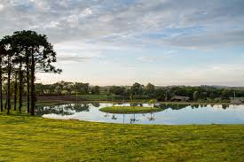
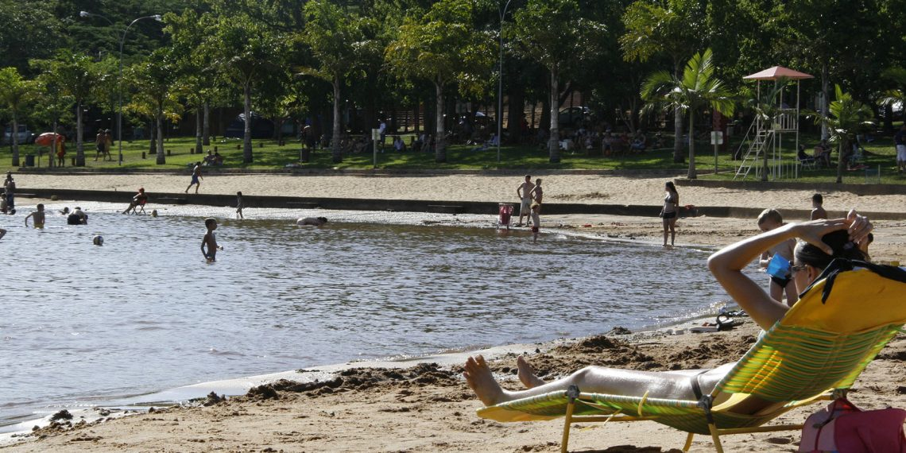
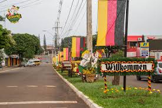

História
Missal foi fundada em [ano] e possui uma rica história ligada à colonização e agricultura. A maioria dos colonizadores de Missal (1961 e 1962), pertence à 2ª geração de imigrantes alemães, que trouxeram consigo características da cultura germânica, expressas nas construções enxaimel, nos jardins floridos e na gastronomia, elementos que foram experimentando adaptações às especificidades locais no decorrer dos tempos. A Sipal Colonizadora, fundada pelo Padre José Backes, foi a grande responsável pela venda dos lotes e formação da cidade. Na época, somente famílias que pertenciam à religião Católica poderiam se instalar em Missal. Com orientação de Dom Geraldo Sigaud, líder dos Bispos na época, Pe. José Backes loteou a área de três mil alqueires, que se transformou no Município de Missal. Umas das grandes fontes geradoras de recursos à época da colonização, foi a extração de madeira. O nome do município “Missal” originou-se do fato que os bispos queriam um nome que significasse objeto religioso, para simbolizar de alguma maneira sua origem inserida no fato religioso. Todos conheciam como Gleba dos Bispos, ou Terra dos Bispos. Foram sugeridos vários nomes. O nome escolhido foi MISSAL – inspirado pelos colonizadores e pioneiros, baseado no livro em que o sacerdote se orienta para celebrar a missa – fanal do trabalho espiritual do sacerdote, assim como as terras são fanal do trabalho material do agricultor. Nome sugestivo e de conotações religiosas uma vez que a escolha deste nome é dedução do livro em que o sacerdote da Igreja Católica se orienta para o ofício religioso que é a Santa Missa. Como Missal teve o início de sua colonização orientada pelos bispos e 98% de seus moradores eram de religião católica, é natural que o nome MISSAL teve sua origem neste aspecto. Etimologia – MISSAL – palavra formada pelo termo “missa”, acrescida do sufixo nominativo “al”. O termo “missa” vem do latim “misa” que significa originalmente serviço religioso. O sufixo “al” origina-se do latim ale, significando coleção em quantidade. O termo “Missal” é referência do livro litúrgico que contém o texto de todas as missas do ano. É de uso obrigatório para a igreja católica por decreto do Papa Pio V, a partir de 1570, conforme Decreto do Concílio Vaticano. Na época da fundação o sacerdote ainda rezava a missa em latim e de costas para o povo. (MISSALE ROMANO) O Concílio Vaticano II (1964) aprovou as traduções dos textos litúrgicos, mas conserva uma única e mesma tradição. Entre tamanha diversidade de línguas foi mantida a mesma oração como meio de testemunhar e afirmar a unidade de todos os fiéis. O MISSAL orienta as linhas gerais, segundo as quais se deve ordenar a celebração eucarística, bem como expõe as regras para cada forma particular de oração e tempo litúrgico. Sem dúvida, os pioneiros escolheram e acertaram. Ninguém jamais pensou em mudar o nome e quem mora aqui pode dizer com orgulho: SOU MISSALENSE DE CORAÇÃO. Missal representa a nossa história. No período da emancipação foi considerado como SENTINELA DE ITAIPU, pois limita com o grande Lago Internacional de Itaipu. A formação de Missal deu-se a partir do desmembramento do município de Medianeira e a data oficial de criação do município foi em 30 de dezembro de 1981, por meio da Lei Estadual n° 7.566. No dia 1º de fevereiro de 1983 foram empossados o primeiro Prefeito e os membros da Câmara de Vereadores; nesta data se comemora o aniversário de emancipação político-administrativa. 
Turismo
Conheça os principais pontos turísticos de Missal, como [Ponto Turístico 1] eOferece local próprio para acampar, com muitas árvores, churrasqueiras, banheiros, quadra de esportes e um amplo pavilhão de festas, onde também são oferecidos refeições. [Ponto Turístico 2] Praia de Missal Localizado às margens do lago de Itaipu, distante 14 quilômetros da sede do Município, o Terminal Turístico de Vila Natal é um dos principais pontos turísticos de Missal. É palco de grandes eventos, como: Desafio de Pesca à Corvina, Festa dos Navegantes, apresentação de Bandas, gincana de verão, show pirotécnico na festa de revellion entre outras opções de recreação. Para quem gosta de esportes aquáticos como Jet-ski, pesca esportiva e passeios náuticos podem apreciar pelas paisagens, enseadas e ilhas formadas pelo Lago de Itaipu. 
Cultura
A cidade é conhecida por suas festas e tradições culturais que atraem visitantes de toda região. A cultura e história, existem relíquias expostas no Museu Municipal. São objetos doados por famílias de pioneiros, à disposição para visitação em horário comercial ou com prévio agendamento. Missal tem, em sua área territorial, muitos espaços preservados, que podem ser apreciados pelos amantes da natureza ou do esporte, belas paisagens naturais e passeios náuticos junto ao Lago de Itaipu, além da cultura germânica demonstrada através das festas, da alimentação e das características físicas dos moradores. Tudo isto são atrativos imperdíveis. Na colonização de Missal desde o início predominou a população de origem germânica. Grande parte dos colonizadores que chegaram em 1962, eram da segunda geração de imigrantes alemães e trouxeram consigo características da cultura germânica expressas nas construções m chaimel, decorações, jardins floridos e na gastronomia. As tradições gaúchas são cultivadas no município por meio de festas, bailes, fandangos, rodeios de laço e churrascos. Umas das mais esperas festa da tradiçao Alemâ Deutsches Fest: festa alemã realizada sem data fixa no município, conta com vários atrativos como o jogo do barril. 